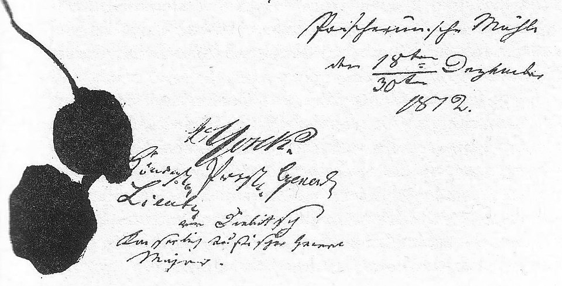
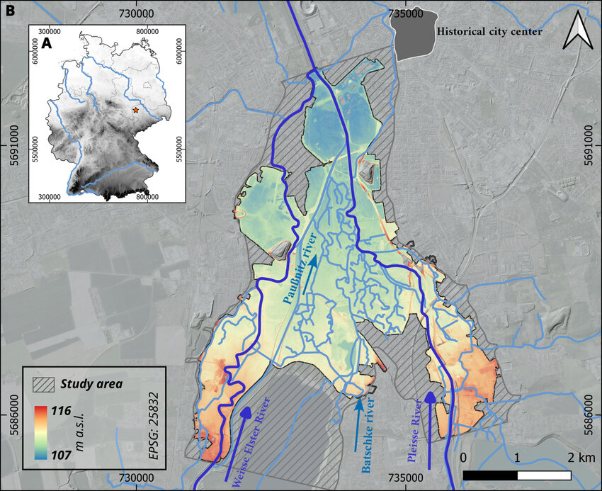
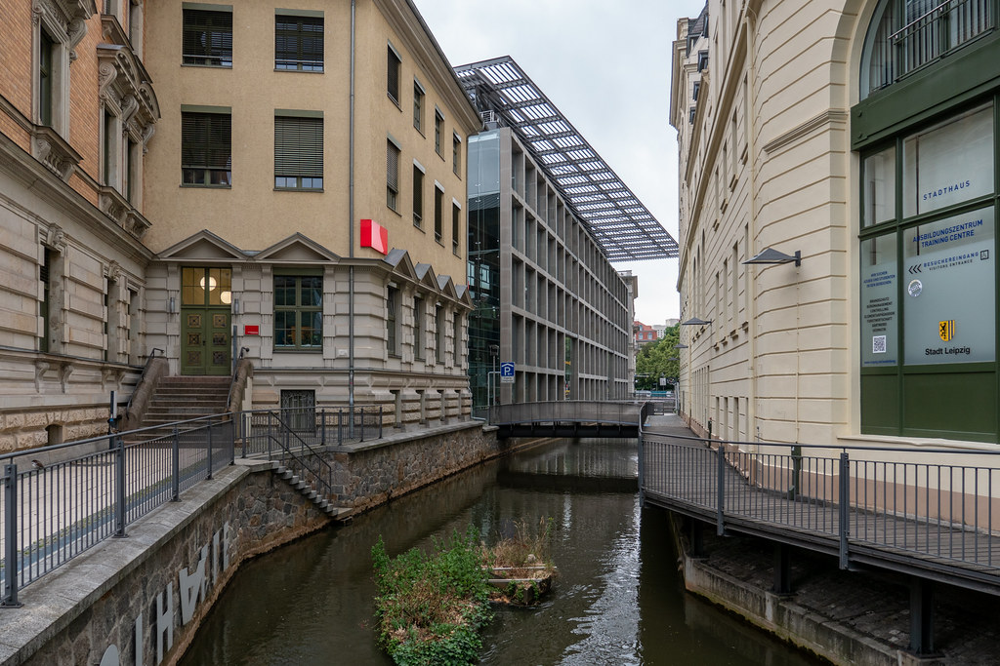
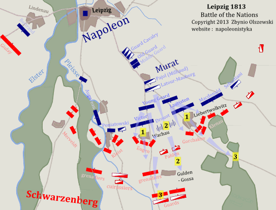
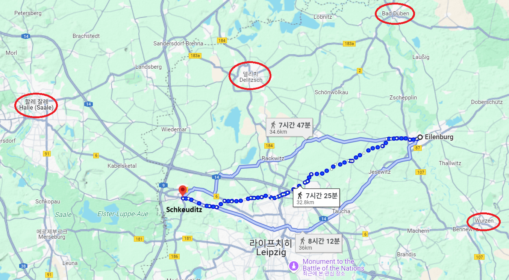

라이프치히 전투 (8) - 작전 변경
게시: 2025-07-14T06:30:16+09:00
흔히 러시아 짜르라고 하면 모르도르의 군대를 이끄는 사우론 같은 악당처럼 생각되기도 하지만, 알렉산드르는 매우 점잖고 신앙심 깊은 신사였습니다. 그의 가장 큰 장점은 겸손함이었는데, 이는 그의 단점인 자신이 뛰어난 전략가라고 착각하곤 한다는 점을 상쇄하고도 남았습니다. 특히 1812년 나폴레옹 침공 초반에 군사 작전에 간섭하며 삽질을 거듭한 이후 그 겸손함은 더 깊어졌습니다. 그래서 알렉산드르는 톨로부터 슈바르첸베르크의 작전안에 보고를 받은 후에도 혼자서 판단하지 않고 즉각 디빗취(Hans Karl von Diebitsch-Sabalkanski)와 조미니를 불러 의견을 물었습니다.

(디빗취는 당시 28세의 새파랗게 젊은 귀족이었는데도 저렇게 조미니와 함께 러시아군의 브레인으로 짜르의 부름을 받았다는 것이 꽤 놀랍습니다. 그는 원래 프로이센령 슐레지엔 태생으로 어릴 때 교육도 베를린 사관학교에서 받았습니다. 그런 그가 프로이센군이 아니라 러시아군 소속이 된 것은 그가 13살 때 그의 아버지가 어린 뷔르템베르크 오이겐(Eugen Friedrich Karl Paul Ludwig Herzog von Württemberg) 대공의 가정교사 겸 툴라(Tula)의 러시아 병기창 검열관으로 채용되어 러시아로 이민을 갔기 때문이었습니다.)

(디빗취는 1801년 16세의 나이로 소위로 임관한 뒤, 20세 그야말로 약관의 나이로 아우스테를리츠 전투에 참전하여 부상을 입었습니다. 이후 아일라우와 프리틀란트 등 여러 전투에 참전하여 이름을 날렸고, 1812년 폴로츠크 전투에서 공을 세워 불과 27세의 나이에 소장 계급으로 승진했습니다. 이 문서는 그가 러시아군 대표로서 프로이센군 요크 백작과 맺은 1812년 12월 30일 타우로겐(Tauroggen) 협정서에 들어간 요크 백작과 디빗취의 서명입니다.) 알렉산드르를 놀라게 한 것은 슈바르첸베르크 작전안의 부실함보다도, 그 작전안에 대해 모든 러시아군 장군들이 일심단결하여 반대한다는 점이었습니다. 의심의 여지가 없다고 판단한 알렉산드르는 슈바르첸베르크를 불러 러시아군의 일치된 의견을 전달하며 작전안을 대폭 수정하도록 설득했습니다. 그러나 슈바르첸베르크도 나름대로의 확신이 있어서 그랬던지, 아니면 더 이상 러시아군에게 휘둘리는 것이 지긋지긋해서 그랬는지 짜르의 긴 설득에도 요지부동 입장을 바꾸지 않았습니다. 슈바르첸베르크의 고집은 마침내 알렉산드르조차 열받게 만들었습니다. 짜증이 난 그는 슈바르첸베르크에게 이렇게 이야기하며 이 군영에서 누가 진짜 최종 보스인지를 깨닫게 해주었습니다.
"좋소, 사령관. 오스트리아군을 어디에 배치하건 당신 마음대로 하시오. 그러나 콘스탄틴 대공의 러시아 근위대와 바클레이의 러시아군은 플라이서(Pleisse)강 우안으로 도강할 것이고 거기 계속 머물 것이니 그리 아시오." 결국 슈바르첸베르크도 달리 방법이 없었습니다. 그의 편성안에서 원래 좌익에 배치했던 러시아/프로이센 근위대 등은 모조리 우익으로 재배치 되어 바클레이의 지휘를 받게 되었고, 좌익은 원래의 5만2천에서 대폭 줄어들어 2만8천의 오스트리아군만 남게 되었습니다. 대신 우익이 7만2천에서 9만6천으로 대폭 증강되었습니다. 이 변경은 슈바르첸베르크의 기본 전략, 즉 모루와 망치 작전을 근본적으로 바꾸는 것이었습니다. 아주 간단히 단순화하면, 슈바르첸베르크의 나름 머리를 쓴 기동 우회 작전을 알렉산드르가 정면 충돌의 소모전으로 바꿔 버린 셈이었습니다. 알렉산드르의 이런 작전 변경이 과연 옳은 것이었을까요? 확실히 슈바르첸베르크의 작전안은 현지 지형, 즉 엘스터강과 플라이서강 사이의 습지에 대한 이해가 부족했음을 보여줍니다. 그의 작전안이 성공하려면 보헤미아군 좌익이 그 습지대를 빠른 속도로 돌파해야 했는데, 그 일대의 상태는 그러기에 매우 부적절했습니다. 슈바르첸베르크의 작전안을 기획한 랑게나우는 자신이 그 지역 일대를 손바닥처럼 아는데, 플라이서강 같은 경우 걸어서 건널 수 있는 여울목이 여러 곳 있는 작은 강이라고 주장했습니다. 랑게나우가 그 지역의 지리를 잘 안다는 말은 아마도 사실이었을 것입니다. 그러나 손자병법에서 장군은 천지인(天地人)을 다 고려해야 한다고 주장할 때 하늘(天)도 포함시킨 것은 하늘의 뜻에 따라야 한다는 도교적인 주장이 아니었습니다. 거기서 말하는 하늘은 바로 시간과 날씨를 뜻하는 것이었습니다. 랑게나우가 그 일대를 조사할 때의 계절이 언제였는지는 알 수 없으나, 10월 15일 당시 그 일대는 지난 주에 계속 내렸던 비로 인해 물바다 상황이었고 엘스터와 플라이서는 수위가 크게 높아진 상태였습니다. 특히 14일에도 많은 비가 내렸고, 15일 밤과 16일 새벽에도 비가 내릴 예정이었습니다. 아마도 슈바르첸베르크의 모루와 망치 작전은 실패했을 가능성이 매우 높았습니다.

(엘스터강과 플라이서강 사이의 습지는 저렇게 수많은 개울들이 많았습니다.)

(이 사진은 현재의 라이프치히 외곽에 있는 약 3km 길이의 Pleißemühlgraben(플라이서뮐그라벤, Pleiße Mill Ditch, 플라이서 물방앗간 도랑)입니다. 이 물길은 처음에는 그 이름처럼 제분소를 돌리는데 사용되었고, 16세기부터는 뗏목을 이용해 목재를 운반하는 데에도 사용되었습니다. 1865년까지 도시의 중심 목재 처리장이었던 남부 중부 지역의 Floßplatz(플로쓰플라츠, Rafting Site, 똇목터)라는 이름이 있을 정도니까요. 즉 플라이서강은 좁고 작은 강이긴 하지만 우기에는 수량이 꽤 불어나는 강이었던 것입니다.)

(결과적으로 플라이서강 좌안에는 저렇게 메르펠트(Merveldt)의 오스트리아군 제2군단과 예비대 정도만이 투입되었습니다. 그나마 이들도 엘스터강에 의해 귤라이의 오스트리아군 제3군단과 완전히 단절되었습니다.) 슈바르첸베르크의 좌익이 크게 약화되었다고 해서 모루와 망치 작전에서 망치가 다 사라진 것은 아니었습니다. 연합군에게는 여전히 묵직한 망치가 라이프치히 북서쪽에 있었습니다. 바로 블뤼허의 슐레지엔 방면군이었습니다. 그러나 거기서도 슈바르첸베르크의 명령은 제대로 돌아가지는 않았습니다. 문제는 그 일대에서의 그랑다르메의 병력 배치도 명확히 모르는 주제에, 슈바르첸베르크의 명령서가 지나치게 상세했다는 점이었습니다. 블뤼허는 그 명령을 문구 그대로 따를 생각이 없었습니다. 무엇보다 슐레지엔 방면군이 슈바르첸베르크의 명령대로 움직이고도 라이프치히 공격에 성공하려면 베르나도트가 슈바르첸베르크의 명령을 매우 충실하게 따라주어야 했습니다. 그러나 블뤼허는 베르나도트를 절대 믿지 않았으며, 사실 그때 블뤼허도 슈바르첸베르크도 베르나도트의 정확한 위치를 전혀 알지 못했습니다. 게다가, 슈바르첸베르크의 명령은 블뤼허가 귤라이와 합세하여 린더나우(Lindenau)를 공격하라는 것이었는데, 그 일대는 방어에 매우 용이한 지형이었습니다. 블뤼허의 주력을 괜히 린더나우 공격에 투입했다가 빠른 점령과 돌파에 실패할 경우, 망치와 모루는 커녕 라이프치히 남쪽의 주전장에 아무런 영향을 끼치지 못하게 될 가능성이 매우 높았습니다. 또 러시아군 장군들이 본 결점은 당연히 블뤼허의 눈(실은 그나이제나우의 눈)에도 보였습니다. 그 작전안대로 행동할 경우 슐레지엔 방면군은 엘스터 및 플라이서 강들에 의해 보헤미아 방면군 좌익과 완전히 분단되므로, 나폴레옹의 먼저 블뤼허에게 집중 공격을 가할 경우 블뤼허는 보헤미아 방면군으로부터 아무 도움을 받지 못하고 각개격파될 것이 뻔했습니다. 블뤼허는 자기 마음대로 움직이겠다는, 즉 린더나우 공격에 참여하지 않고 더 북쪽인 린덴탈 방면으로 움직이겠다는 뜻을 슈바르첸베르크, 그리고 더 중요하게는 짜르에게 알리고 그 허락을 받아내기로 했고, 그 전령으로는 역시나 당돌하기 짝이 없고 할 말은 다 하는 륄(Rühle von Lilienstern) 소령을 또 보냈습니다. 특히 륄 소령은 뤼첸 전투 직전인 그 해 5월 샤른호스트의 명에 따라 라이프치히 일대 지형을 샅샅이 조사한 바 있었으므로 그 설득 작업에 딱 적임이었습니다. 거기에 더해, 블뤼허가 륄에게 부여한 또 하나의 임무는 알렉산드르와 슈바르첸베르크에게 베르나도트는 절대 믿어서는 안 된다고 뒷담화하는 것이었습니다. 다만 10월 15일 밤 늦게 알렉산드르가 있는 로타(Rotha)에 륄이 도착했을 때는 위에서 언급한 대로 이미 알렉산드르가 슈바르첸베르크의 명령서를 바꿔 놓은 상태라서 륄은 할 일이 별로 없었습니다. 슈바르첸베르크도 자신이 잘 알지 못하는 라이프치히 북서쪽 방면에 대해서는 별 의견이 없었으므로 블뤼허의 작전안에 대해 반대하지 않았습니다. 합의된 새 명령서는 블뤼허는 16일 아침 7시에 쉬코이디츠에서 라이프치히로 직접 진격하고, 린더나우 공격은 귤라이의 오스트리아 제3군단과 리히텐슈타인의 오스트리아 경보명 사단만으로 수행하는 것이었습니다.

(아일렌부르크 혹은 더 서쪽인 델리취에서는 14일~15일에도 끊임없이 그랑다르메 병력들이 남쪽으로 이동하고 있었습니다. 따라서 쉬코이디츠에서 나폴레옹의 뒤통수를 노리던 블뤼허가 역으로 측면을 찔릴 수 있었습니다.)
이렇게 베르나도트를 미워한 블뤼허도 베르나도트에게 부탁할 것이 있긴 했습니다. 당시 북쪽에서 그랑다르메 병력들이 계속 라이프치히로 내려오고 있었는데 그 중 일부가 슬쩍 방향을 서쪽으로 틀어 블뤼허의 측면을 공격할 위험이 있기 때문이었습니다. 블뤼허는 베르나도트에게 마음에도 없이 겸손한 어조로 탄원에 가까운 편지를 보내어, '지난 번에 언급하셨던 아일렌부르크(Eilenburg) 방면으로의 대규모 기병 작전을 예정대로 수행하실 생각이신지 제발 알려주십쇼'라며 굽신거렸습니다. 베르나도트가 그렇게 최소한 델리취(Delitzch)까지는 기병대를 진격시켜 놓아야 블뤼허의 좌측 측면이 나폴레옹의 기습으로부터 안전할 수 있었던 것입니다. 그러나, 그 편지는 아마도 15일 오후에는 베르나도트에게 닿았을 텐데, 16일 새벽이 되도록 베르나도트로부터는 별 답장이 없었습니다. 결국 블뤼허는 계속 자신의 좌측면에서 뭐가 나타날지 모른다는 긴장 속에서 16일 아침을 맞이해야 했습니다. Source : The Life of Napoleon Bonaparte, by William Milligan Sloane Napoleon and the Struggle for Germany, by Leggiere, Michael V With Napoleon's Guns by Colonel Jean-Nicolas-Auguste Noël https://www.britannica.com/event/Napoleonic-Wars/Dispositions-for-the-autumn-campaign http://www.historyofwar.org/articles/campaign_leipzig.html https://warhistory.org/@msw/article/leipzig-battle-of-the-nations https://www.encyclopedia.com/history/encyclopedias-almanacs-transcripts-and-maps/leipzig-battle-0 https://www.blaues-band.de/elster/ https://www.researchgate.net/figure/Geographical-context-of-the-study-area-A-Location-of-Leipzig-within-Germany-marked-by_fig1_392446513 https://www.flickr.com/photos/127124365@N04/48204652201 http://napoleonistyka.atspace.com/Leipzig_battle.htm https://de.wikipedia.org/wiki/Hans_Karl_von_Diebitsch-Sabalkanski